About this Guide
The Shop Floor App is where operators create and move LOTs at the terminals. Each terminal shows a different screen depending on the location it is assigned to. This guide walks through every screen and explains what each one does.
How LOTs move
Every LOT that is not received at the Receiving Dock starts at Die Cast, where it is opened into a cavity and filled with parts. Where it goes next depends on its Route, which an administrator or supervisor defines in the Configuration Tool. A few LOTs are finished as soon as they leave Die Cast, but most move on to Trim or to Machining & Assembly, and some pass through all three. Between machines, LOTs wait in storage.
The three main stages of a LOT
1Die Cast
Where the parts in a LOT are first created. You scan the LTT barcode from the basket (this is what tracks the LOT along its route), pick the part, and assign the basket to a cavity. As parts are cast, output is recorded against the shift that produced it. Once the basket is full, it is released from its cavity.
2Trim
Some parts pass through here. On the Trim screen the LOT is checked in by scanning its LTT barcode. Once trimming is finished, the LOT is selected on the Trim OUT tab and released.
3Machining & Assembly
This stage has four screens: Machining IN, Machining OUT, Assembly IN, and Assembly OUT. Which of them a LOT passes through depends on its route. After leaving Trim, a LOT waits in the line's storage until it is picked into Machining & Assembly.
MESL1710935 instead.
Audits
Practically every action and event — Die Cast production, LOT movement, downtime entry — is recorded and stored in the database. Each log entry captures the operator who performed it, where and when it happened, and the data that changed. This is why operators sign in with their initials before using a terminal: it is what makes each action traceable to a person and a shift.
Other features
Beyond managing LOTs and machines, the Shop Floor App covers several other areas. Operators can enter their shift times and can start, end, and edit downtime events. Supervisors can obtain elevated access at a terminal in order to trace LOTs, manage holds, and search LOT details.
Login & Setup
The first time you use a terminal you are prompted to sign in. Signing in requires only your initials — the account system is not a security boundary, so there is no password. Its purpose is to record which operator performed which action. Everything operators do is audited and stored permanently, and can be reviewed later in the Audit Log in the Configuration Tool. If your initials are not on file yet, you are prompted to create a new user and to supply a Display Name. Initials must be unique, because initials — not the display name — are how each user is identified.
After signing in you land on the Terminal Entry page. Here you scan or select the location the terminal should be set to. If you do not have a barcode to scan, use the location tree below to find it. The tree follows the plant hierarchy: Enterprise → Site → Area → Line/Cell → Terminal.
Click the arrow to the right of any name to expand that branch, and keep going until you reach the terminal you want. Clicking the terminal's name sets your terminal to that location.
Die Cast, Trim, or
Machining & Assembly location sends you to a different screen, and each Die Cast
location only offers the parts that are eligible to be cast there.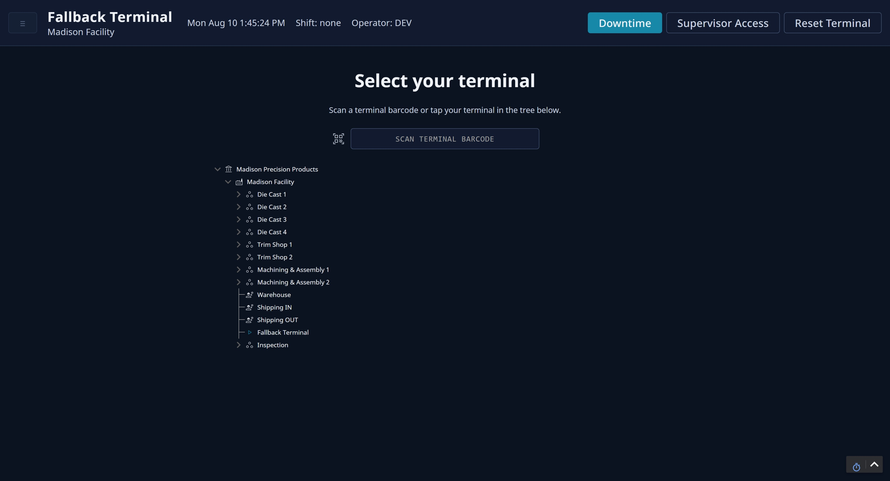
The next few sections of this guide cover the individual locations and their screens.
Receiving Dock
The Receiving Dock is the other way a LOT enters the plant. Parts that MPP buys in rather than casts — purchased components, and pass-through parts that are inspected and shipped on without processing — are booked in here against the vendor's own LOT number.
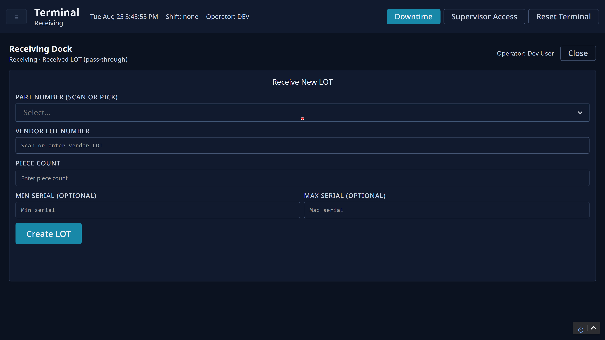
- Scan or pick the Part Number. Only parts eligible at this station are offered.
- Scan or type the Vendor LOT Number — the supplier's own identifier for the material, which is what ties our LOT back to theirs if the part is ever recalled.
- Enter the Piece Count.
- For serialized parts, enter Min Serial and Max Serial. Both are optional and only apply where the vendor supplies a contiguous serial range.
- Press
Create LOT. The LOT is created and its LTT label prints.
If the label does not come out, the form shows Last LTT did not print; fix the printer and
press Reprint LTT rather than creating the LOT again. On hand at this station
lists what is already booked in and still sitting at the dock.
Die Cast
Die Cast is the first stage of a LOT's life, and where the LOT is created. The screen has three tabs. On Open Basket you open an empty basket into each cavity of the mounted die. On Record Shift Output you record the shots produced during a shift and any scrap. On Lot Release you release a filled basket so it can move on to its next route step.
Opening baskets into a die
The Open Basket tab is a grid with one row per cavity of the die that is mounted on the cell. You fill in the rows you want to open and then open them all in one action.
- On a shared Die Cast terminal, pick the Active Cell first. Dedicated terminals already know their cell and do not show the picker.
- Check the Die shown above the grid. It is the tool currently mounted on the cell, and it determines which cavity rows appear.
- For each cavity you want to fill, choose the Part. Only parts that are eligible at this cell
are offered. On a single-part die, fill in the first row and press
Copy part to empty rowsto apply it to every remaining empty row — each row stays editable afterwards. - Scan the LTT Barcode into that cavity's row. The barcode is printed on the basket and is what identifies and tracks it along its route.
- Press
OPEN BASKETSto open every completed row at once, orClearto start over. Each row's Result column reports whether that basket opened successfully.
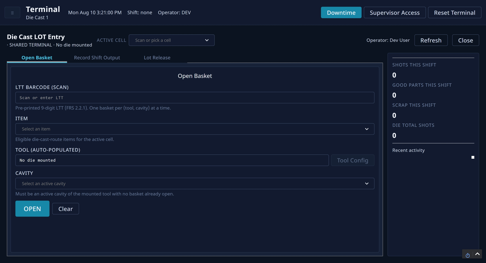
Recording shift output
Output is recorded against the shift that produced it. You enter one die-wide shot count and the system proposes how those shots divide across the open cavities; you then correct the good count and record any scrap per cavity. Shots this shift, good parts, and scrap are summarised on the right-hand side of the screen.
- Choose the shift in the
Reporting shiftdropdown. - Enter the number of shots in
Shots this entry (die-wide). This is the count for the whole die, not for one cavity. - Press
Compute / Preview. A breakdown row appears for each cavity. Rows for baskets that have already been released may also be listed for reference; those are not affected. - Adjust the Good (pc) figure on any row that needs it, and press
Add scrap reasonto record scrap against that cavity. Each scrap line takes a defect code and a quantity, and you can add as many lines per cavity as you need. - Press
SUBMIT SHIFT OUTPUT. The tallies on the right update to match.
Scrap that cannot be attributed to a single cavity is recorded separately in the
Shot loss (all cavities) row at the top of the tab: choose a Defect reason, enter the
quantity, and press Register shot loss.
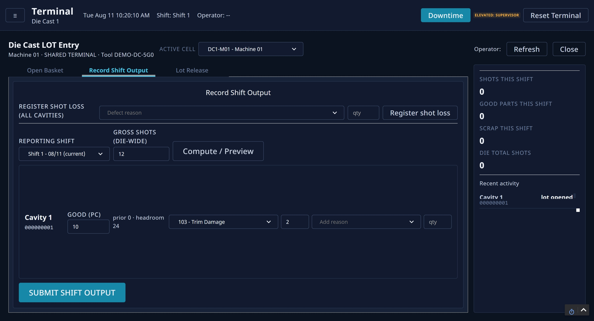
Lot release
Once a basket is filled, release it on the Lot Release tab, which lists every basket currently open on this die. Each row offers two actions:
Release— frees the LOT from its cavity, moves it to the next step on its route, and opens the cavity back up. You may be prompted to deposit it into Trim Storage, where it waits until it is checked in to Trim. An under-filled LOT raises a warning, which you can accept if the short basket is intentional.Void— shown only for empty baskets. This discards the LOT and stops it from moving along its route.
Trim
The Trim workflow is straightforward: you check a LOT in, and when trimming is finished you move it out and record any scrap.
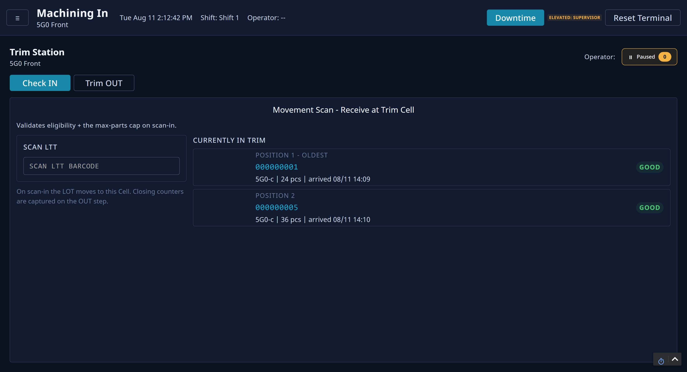
On a shared Trim terminal, pick the press in the Active Cell dropdown first. On Check IN, scan or type the LTT barcode from the LOT. The LOT's details appear, along with whether it is eligible for Trim; the scan also enforces the cell's maximum-parts cap. LOTs already checked in at the press are listed under Currently in Trim.
The Trim OUT tab shows the same Trim inventory. Select a LOT by tapping its card, or scan its barcode, then record the good and scrap counts and release it. Released LOTs are deposited into the line's Trim Storage, where Machining IN picks them up.
Machining IN
Machining IN is where a LOT is claimed from Trim Storage and started at the line. You start a LOT by scanning its LTT.
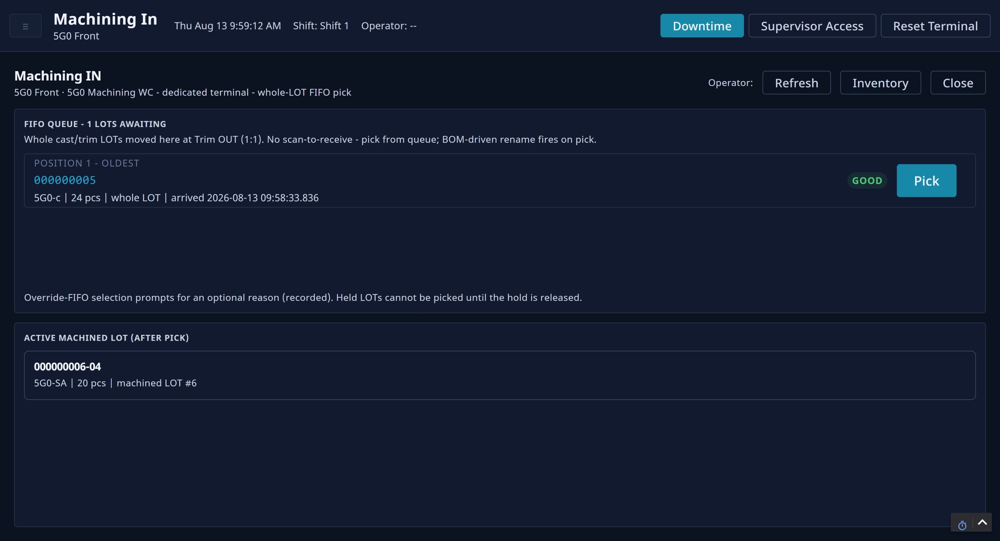
- Scan or type the LTT into
Scan LTT to start machining. - Check the LOT name, part, and piece count shown in the review panel.
- Press
Start Machining. The LOT moves from Trim Storage to this line and becomes the active machined LOT.
Press Inventory in the header to see what is currently held at the line, and
Scrap to record rejects against a LOT.
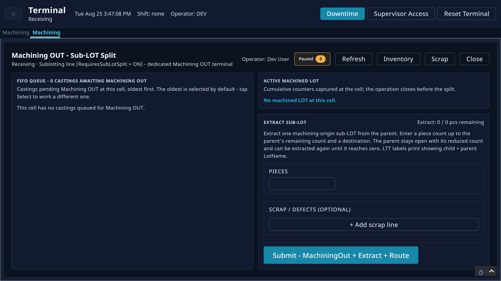
Machining OUT
Machining OUT is where finished castings leave the machining line. It works from a FIFO queue of the castings pending at this cell, oldest first.
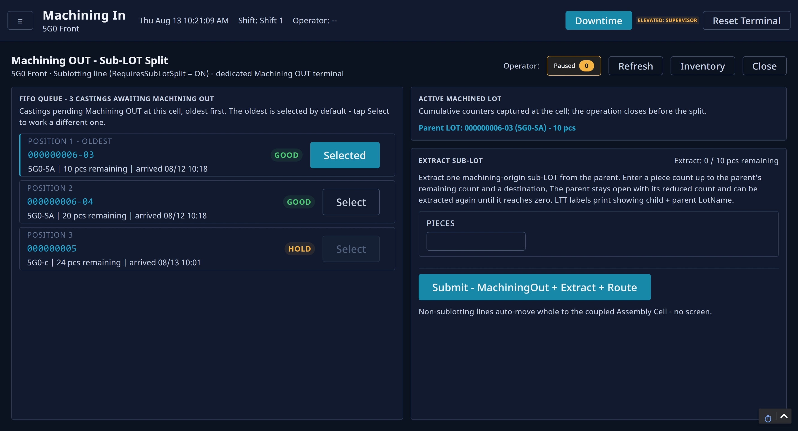
Select the parent LOT you want to extract from, then enter a piece count up to the parent's remaining count and choose a destination. Extracting fewer than the full count creates a sub-LOT: it is separated from its parent but stays linked to it in Genealogy (supervisor only). LTT labels print showing both the child and the parent LOT name. The parent stays open with its reduced count and can be extracted again until its remaining pieces reach zero, at which point it leaves the Machining OUT queue and its output moves into storage.
Assembly IN
Assembly IN is where component LOTs are brought to an assembly cell. Scan a LOT's LTT to check it in; the list shows the components currently at the cell.
- Scan or type the LTT into the
Scan / enter LTT (LotName)field. - Press
Scan In. The LOT moves to this cell and joins Components at this cell.
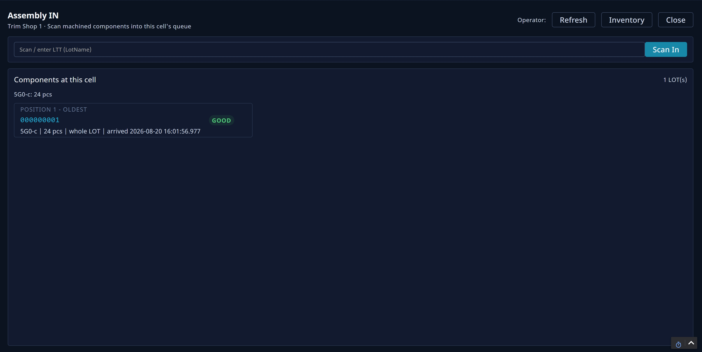
Assembly OUT
Assembly OUT is where the finished good is built. It consumes the components standing at the cell and produces a finished-good LOT packed into a tray and container. There are two variants, and the terminal's configuration decides which one you see.
- Non-serialized line — trays close by count, by weight from the line scale, or by the line
camera, depending on the closure method configured for the part. Press
Complete Trayto close the tray, thenCompleteon the Container Completion Gate to finish the container. - Serialized line — the same flow, with the vision station embedded in the screen and the PLC closing the container once the target weight is reached.
Both variants show the part being produced, the components available at the cell, and a live
projection of how many finished goods the standing components can support — components running low are
flagged. CRT Validation in the header opens the container-validation queue for parts that
require it.
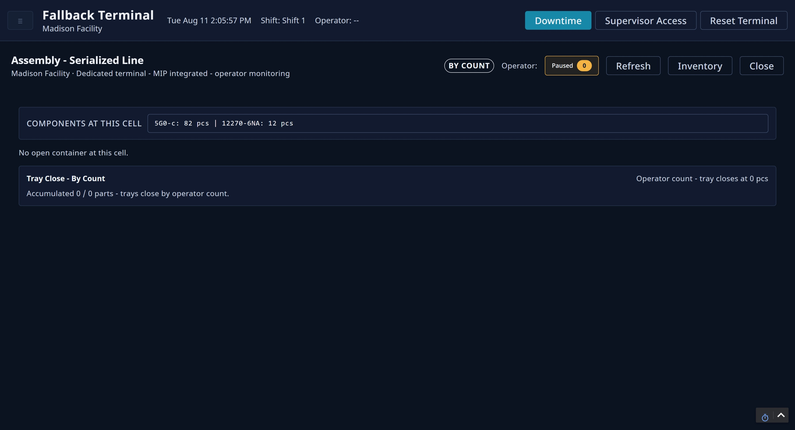
Inspection
The Inspection terminal records a quality check against a LOT. What it asks you to measure is not fixed — it is generated from the Quality Spec published for that part, so each part presents its own set of attributes and tolerances.
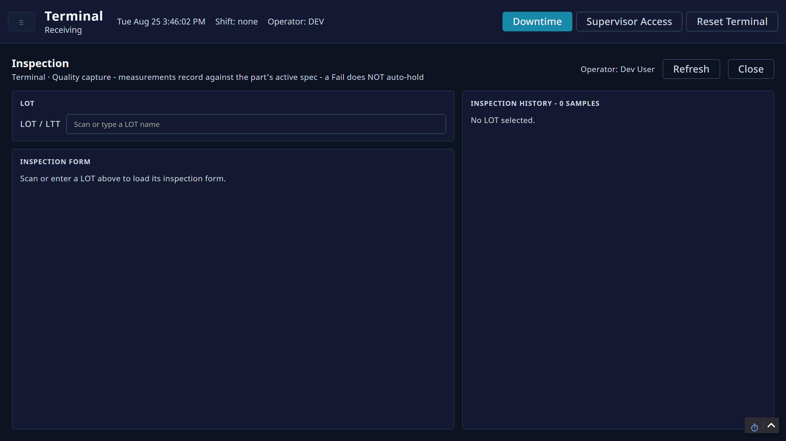
- Scan or type the LTT into LOT / LTT. The LOT's summary appears; an unknown code gives LOT not found — check the LTT and try again.
- Pick the Trigger — why this inspection is being done (first-off, in-process, a reaction to a problem, and so on).
- Fill in each attribute the form lists. Attributes marked * are required, and the record is rejected if one is left empty.
- Press
RECORD INSPECTION.
If the part has no published spec the form says No published quality spec for this part —
the spec has to be authored and published in the Configuration Tool before the part can be inspected.
A failed check can be escalated immediately with PLACE HOLD, which puts the LOT on hold
without leaving the screen.
Inspections button that brings you straight to this terminal.Third-Party Inspection
The third-party inspection station handles bought-in parts that MPP inspects and ships on without manufacturing. It is a two-tab wrapper around screens documented elsewhere in this guide, because the workflow is deliberately the same one used everywhere else.
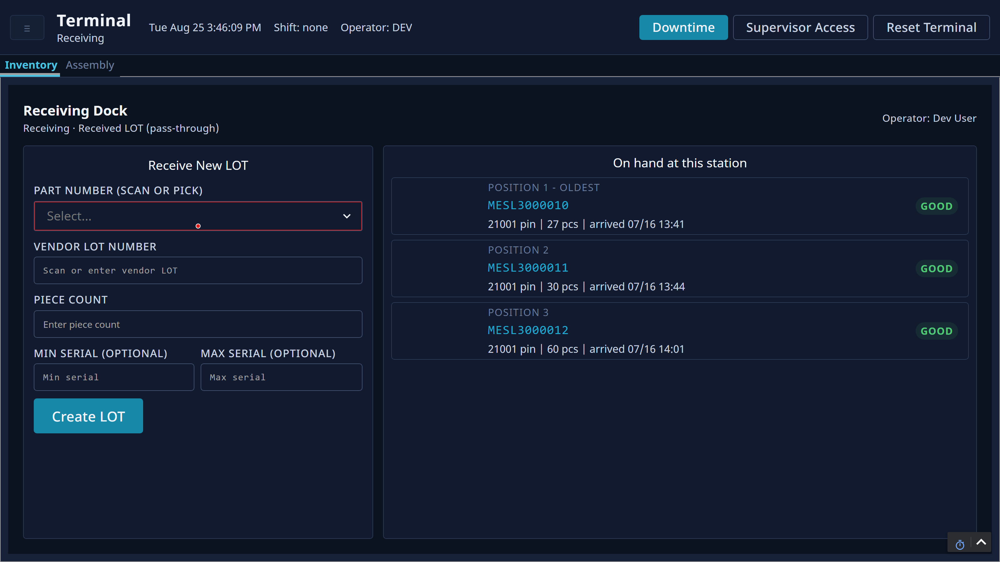
- Inventory — the Receiving Dock screen. Book the incoming parts in against the vendor LOT.
- Assembly — the non-serialized Assembly OUT screen. Checking a pass-through part out is an assembly-out: the bought-in part is consumed as a component by a newly minted finished good, packed one LOT to one tray to one container.
Holds
A hold stops a LOT from being moved or consumed. When a hold is placed, the LOT's status badge updates to show it and the terminals refuse to act on it until the hold is released.
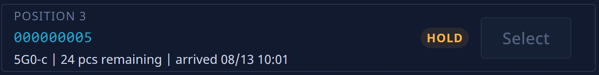
A hold can be placed on a LOT at any location. Common reasons include a failed quality inspection or a customer complaint. The hold stays on the LOT until a supervisor releases it.
Hold Management
The Hold Management screen is where supervisors view, place, and release holds on LOTs and containers. It has two tabs: Open Holds and Bulk & Scrap.
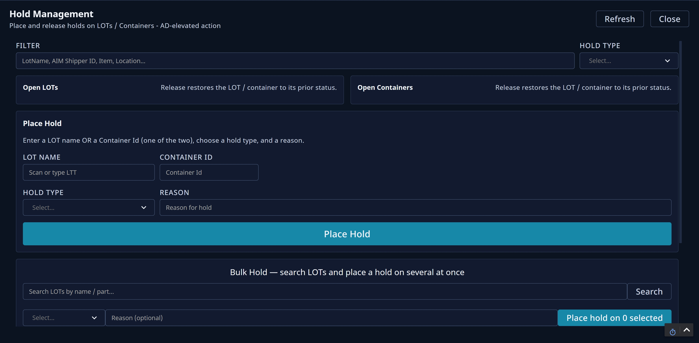
Open Holds
The left column lists every open hold. Narrow it with the Filter field, which matches LOT
name, AIM Shipper ID, item, or location, and with the Hold Type dropdown. Select a row to load
it into the panel on the right, or press New hold to start from an empty panel.
Placing a hold
- Identify the target: enter a LOT name (scan the LTT) or a Container Id, then press
Load. - Choose a Hold type. This is the broad category the hold falls under, and it is what the Hold Type filter sorts on later.
- Type a Reason. Be specific — this is what the next person reads when deciding whether the hold can come off.
- Press
Place hold.
Releasing a hold
With a held LOT or container loaded, the Release hold group shows a summary of the current
hold. Enter Release remarks explaining why it is being released, then press
Release hold. A LOT on hold can also be released from the Hold tab of its
LOT Detail page.
Bulk hold
On the Bulk & Scrap tab, Bulk Hold places one hold across several LOTs at once. Search for LOTs by name or part, select the ones you want, choose a hold type, add an optional reason, and place the hold on all of them together.
Scrapping a held LOT
The same tab has a Scrap Held LOT panel for recording scrap directly against a LOT that is on
hold — no split, and the hold stays in place. Enter the LOT name, the reject quantity, a defect code,
and any remarks, then press Record Scrap.
Sort Cage
The Sort Cage is where a serialized part is moved out of one container and into another — re-containerization. It works one serial at a time and updates the part in place, so the serial keeps its identity and history and simply changes which container it belongs to.
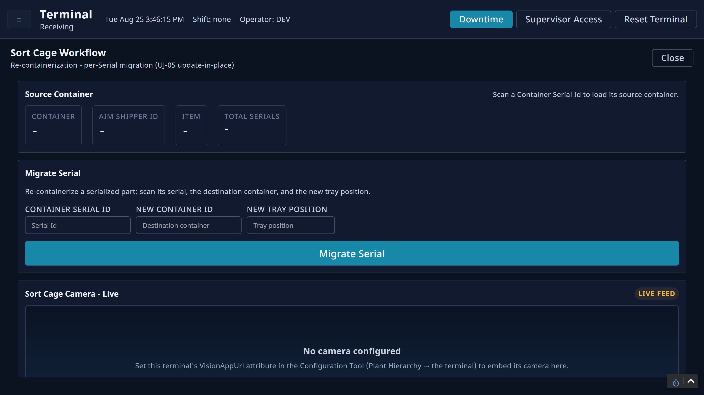
- Scan the Container Serial Id. The Source Container strip fills in with the container it currently sits in, the AIM Shipper ID that container was allocated, the Item, and how many serials the container holds.
- Enter the New Container Id and, if the destination tracks tray positions, the New Tray Position.
- Press
Migrate Serial.
If the source container is on hold, a Container on Hold pill appears in the header and the Held Lots list shows what is affected — from there you can jump straight to the Inspection terminal for a held LOT, or place a further hold.
The Sort Cage Camera panel embeds the station's live vision feed. A terminal with no camera
configured says No camera configured instead; the feed is set per terminal through the
VisionAppUrl attribute in the Configuration Tool.
Shipping Dock
The Shipping Dock is scan-to-ship. Each finished container is scanned by its shipping label as it goes on the truck, and the scan validates the container before it is allowed out.
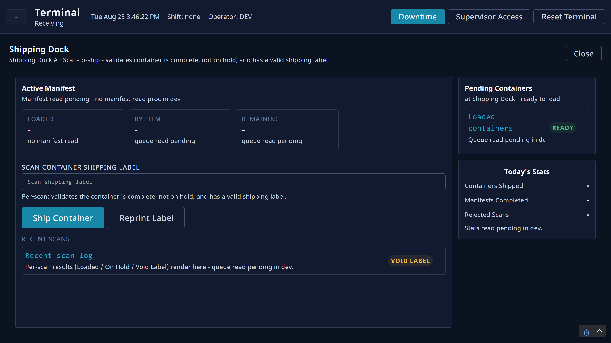
- Scan the container's shipping label into Scan Container Shipping Label.
- Press
Ship Container. The scan checks that the container is complete, is not on hold, and has not already gone out. - Read the result card: it shows Shipped, or the reason the container was refused.
Reprint Label reissues a shipping label that is damaged or missing. Recent Scans
keeps the last few results on screen so you can see what has just gone out, and the rail on the right
lists the containers still pending.
Downtime
The Downtime popup is where machine downtime is managed. You can start a new
downtime, edit an existing one, and add downtime that has already happened. Open it with the blue
Downtime button in the header.
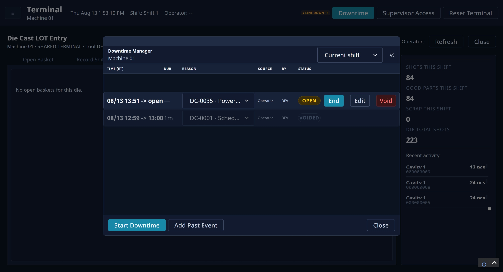
A downtime event has the following properties:
- Reason — categorises the downtime, which makes past events easier to sort and report on. Supervisors create new reasons in the Configuration Tool.
- Start date and End date — when the downtime ran. Both can be set by hand, or filled in automatically when you press the start and end buttons.
- Duration — for downtime that has already happened and whose exact start and end are not known, switch the editor to Duration only and enter how long the machine was down. Events entered this way are flagged as approximate.
- Remarks — optional. Extra context explaining the downtime, which is useful when reviewing past events.
Pressing Start Downtime creates a new event with the start time set to now; you can set
the reason afterwards. In the list, End appears on the active event and sets its end time
to now. Edit lets you change the properties by hand. Void deprecates the
event — the data is not deleted, but the event no longer counts and cannot be edited further.
Downtime is organised by shift. Use the dropdown at the top of the popup to change shift, which is also how you record a downtime event against an earlier shift.
End of Shift
At the end of a shift the operator records the breaks they actually took. This is what turns scheduled shift time into worked time, which is what the availability figures are calculated against.
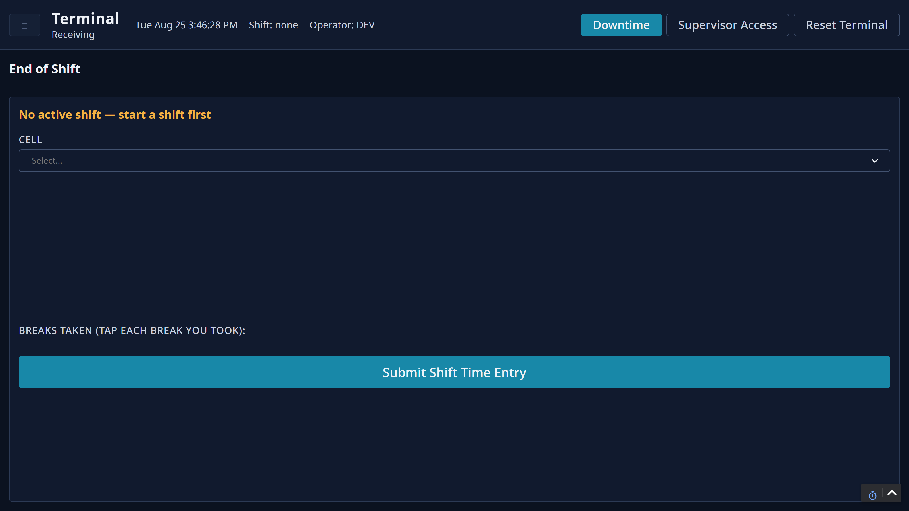
- Pick the Cell you worked, if the terminal covers more than one.
- Under Breaks taken, tap each break you actually took. Breaks are recorded at the end of the shift in one go — there is no clocking in and out of each break as it happens.
- Press
Submit Shift Time Entry.
Shift-End Summary
The Shift-End Summary is the handover sheet: everything the outgoing shift is leaving behind for the incoming one, on a single screen.
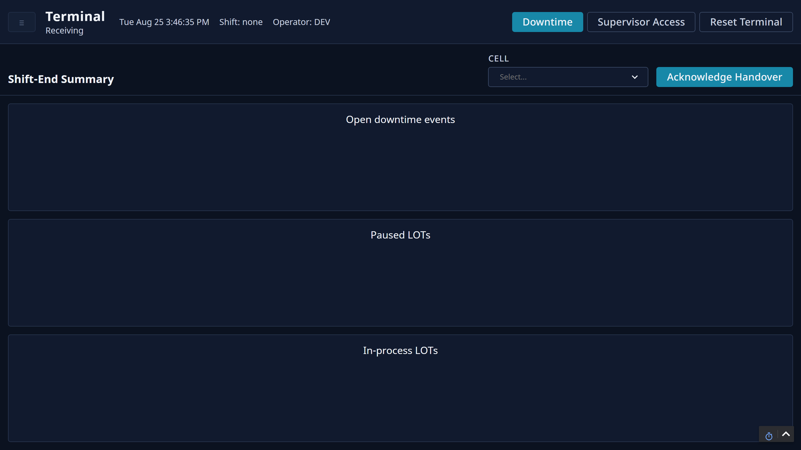
Pick the Cell and review the three panels:
- Open downtime events — downtime that was started and never ended. These keep accruing against the machine until somebody closes them.
- Paused LOTs — LOTs stopped part-way through a step, waiting to resume.
- In-process LOTs — what is still open at the cell and will carry into the next shift.
Press Acknowledge Handover to record that the summary was reviewed. The acknowledgement
is audited — the shift-time data is already committed, so this is a record that somebody read it, not
a submission.
Obtaining Supervisor Access (Elevated Status)
Supervisors who need to trace LOTs, manage holds, or run inspections must sign in with
their own credentials. Press Supervisor Access in the header of any page and enter your
Active Directory credentials when prompted.
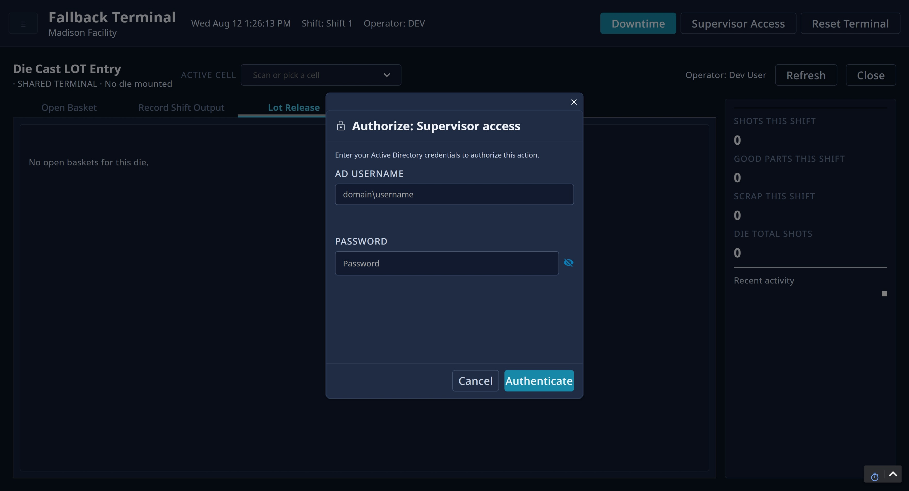
If you cannot sign in and you are certain the username and password are correct, you may not be registered as a user in Active Directory.
Supervisor menu
The menu button at the top left of the header opens the Supervisor Menu. From here you can reach every screen in the project and switch terminals using the location tree on the left. Many of these screens are available only to users with elevated status.
LOT Search
LOT Search is a cross-area lookup over every LOT in the system. Narrow the list by query, status, and origin, then click a row to open that LOT's details.
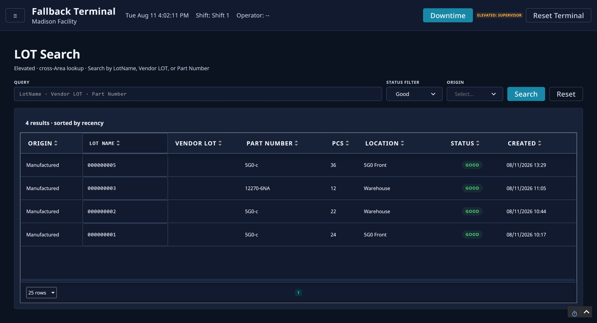
Filtering
| Filter option | Input type / how to use it |
|---|---|
| Query | Text field — the LOT name (LTT barcode or minted name), the vendor LOT, or the part number. |
| Status filter | Dropdown — the LOT's current status: Good, Open, Hold, Scrap, or Closed. Leave it on Any to include all of them. |
| Origin | Dropdown — where the LOT came from: manufactured on site, or received. Leave it on Any to include both. |
Press Search to apply the filters, or Reset to clear them and start over.
LOT Details
Clicking a row opens the LOT Detail page. A strip across the top shows the LOT name, item, piece count, current location, tool, cavity, and total scrap, along with status, hold, and CRT indicators. Eight tabs below it cover the rest.
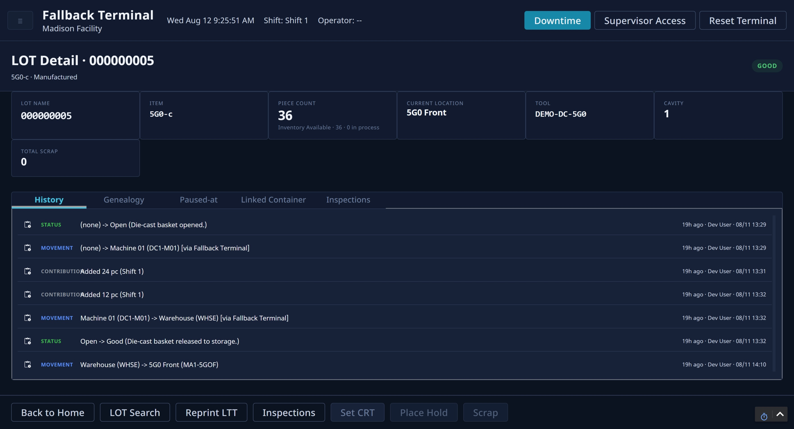
Tab overview
History
Traces everywhere this LOT has been. Each row carries a timestamp and the operator responsible. It logs movements (Die Cast to Trim, for example), status changes (open to closed), contributions (pieces added), and more.
Genealogy
Shows this LOT's parents and children. A sub-LOT extracted at Machining OUT is a child; the casting it came from is the parent.
Paused-at
Lists any open pause rows against this LOT — points where it was stopped part-way through a step and is waiting to resume. A LOT that was never paused shows an empty state here.
Linked Container
For a finished good, shows the container and tray it is packed into and the AIM Shipper ID it shipped under. A LOT that is not packed into a container says so; finished goods link to their container at Assembly OUT.
Inspections
Every inspection recorded against this LOT. Inspections are captured at the Inspection terminal —
the Inspections button in the action bar goes straight there. The part also needs
Quality Specs configured in the Configuration Tool, since those define what is inspected.
Hold
Place a hold on this LOT, or release the hold that is on it, without leaving the detail page. This is the same panel used on the Hold Management screen.
Scrap
Record scrap directly against this LOT, with a defect code, a quantity, and optional remarks.
Correct Count
Adjust the LOT's piece count when the recorded quantity does not match what is physically in the basket. The correction is audited like any other change.
The action bar at the bottom of the screen holds Back to Home, LOT Search,
Reprint LTT, Inspections, and a button that sets or clears the LOT's CRT
flag.
Genealogy Lookup
Genealogy is the parent–child relationship between LOTs. This screen renders it as a tree: the ancestors the searched LOT descends from, and the descendants that came out of it. It is the query surface used to answer Honda traceability questions.
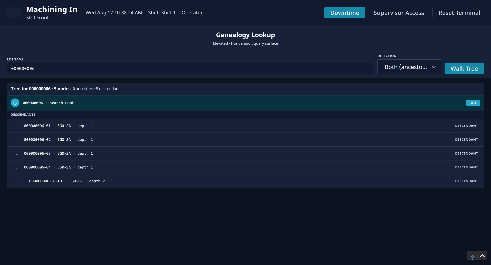
Enter the LOT name in the LotName field, choose whether to walk up, down, or both in the
Direction dropdown, and press Walk Tree. Ancestors are listed above the
searched LOT and descendants below it, with the LOT you searched for highlighted between them.
Track & Trace
Track & Trace is a global lookup that resolves almost any identifier back to a LOT and then shows the path that LOT has taken. Use it to review the production events behind a LOT and who recorded them.
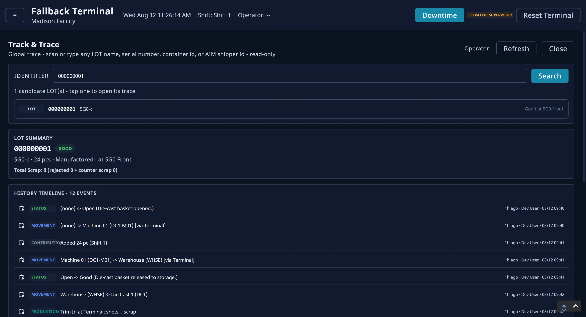
Scan or type any LOT name, serial number, or container identifier into the Identifier
field and press Search. If the identifier resolves to more than one LOT, pick the right
one from the candidate list. You then get that LOT's summary, its history timeline, and
its production events. For a fuller view of parent and child relationships, use the
Genealogy Lookup.
Supervisor Dashboard
A single strip of tiles answering "what needs attention right now?" across the whole plant, rather than at one terminal.
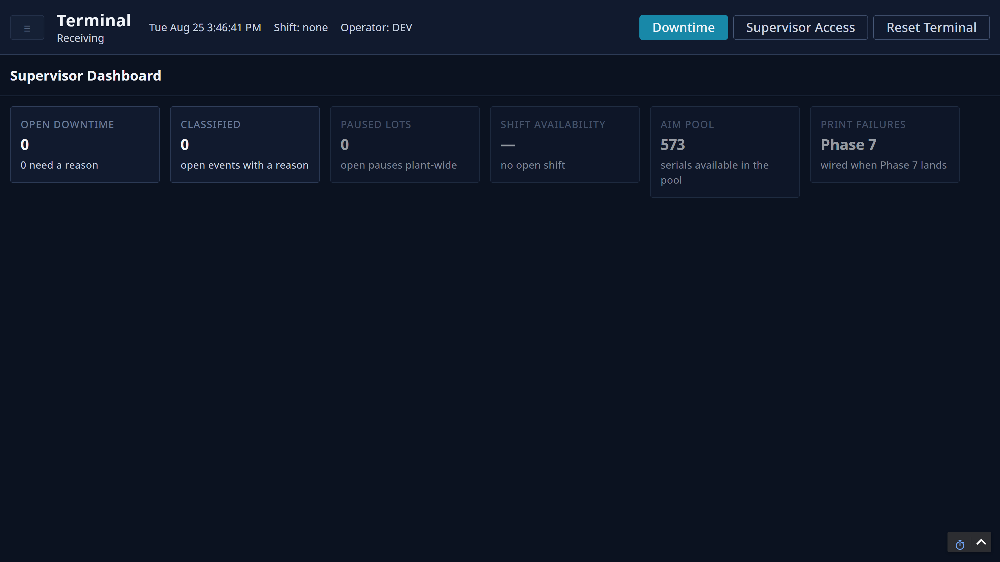
| Tile | What it tells you |
|---|---|
| Open Downtime | Downtime events currently running, and how many of them still have no reason set. An event with no reason cannot be reported on, so this is the number to drive to zero. |
| Classified | How many of those open events do have a reason. |
| Paused LOTs | Open pauses across every location — LOTs stopped part-way through a step. |
| Shift Availability | Availability for the shift that is currently open, rolled up across every piece of equipment. It reads no open shift when none is running rather than showing a misleading 0%. |
| AIM Pool | How many Honda shipper serials are left in the pool. If this runs dry, containers cannot be allocated a shipper ID and shipping stops. |
| Print Failures | Not wired yet. Still shows a placeholder. |
Die Cast Production
A supervisor's view of die cast output: what the current shift has produced against what the previous one did, per area.
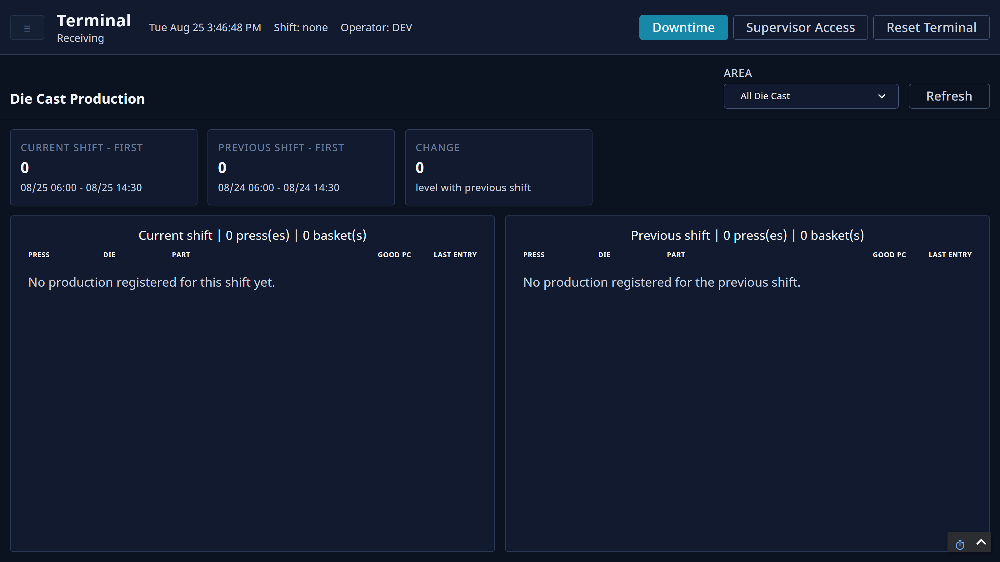
Use the Area dropdown to narrow to one die cast area, or leave it on All Die Cast for
the whole department. The three tiles show the current shift, the previous shift, and the
Change between them, with the per-machine breakdown beneath. Refresh re-reads the
tallies.
Reports
The Reports page produces the printable PDFs — the paperwork that leaves the system. Pick a report from the rail, set its parameters, preview it on screen, and print.
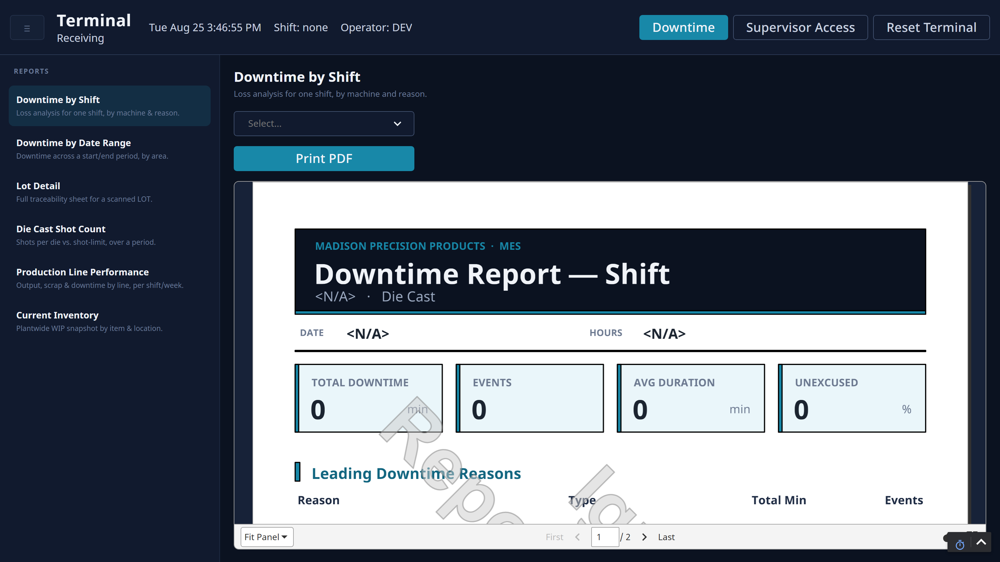
| Report | What it covers |
|---|---|
| Downtime by Shift | Loss analysis for one shift, broken down by machine and reason. |
| Downtime by Date Range | Downtime across a start/end period, by area. |
| Lot Detail | The full traceability sheet for one LOT — header, genealogy and production events. |
| Die Cast Shot Count | Shots per die against its shot limit, over a period. |
| Production Line Performance | Output, scrap and downtime by line, per shift or week. |
| Current Inventory | A plantwide snapshot of work in process by item and location. |
- Tap a report in the REPORTS rail.
- Set the parameters that appear — a shift, a date range, or a LOT, depending on the report.
- Read the preview, then press
Print PDFto produce the file.
AIM Pool Configuration
Honda issues the shipper IDs that go on outbound containers. The MES keeps a buffer of them so shipping never has to wait on a call to AIM. This screen manages that buffer.
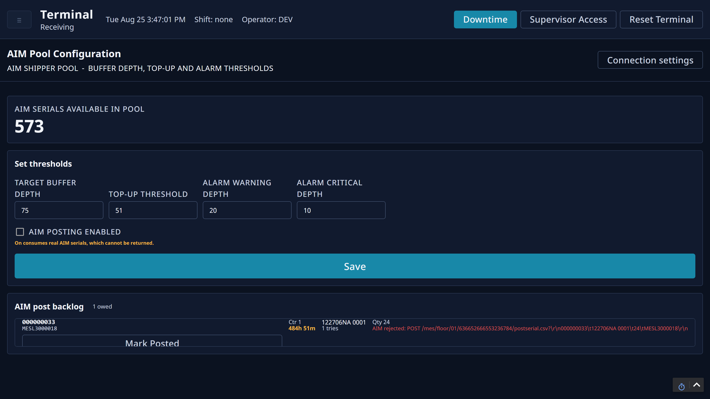
| Setting | What it does |
|---|---|
| Target buffer depth | How many spare serials to hold. |
| Top-up threshold | The depth at which the system fetches more from AIM. |
| Alarm warning depth | Raises a warning when the pool falls this low. |
| Alarm critical depth | Raises a critical alarm — shipping is close to stopping. |
| AIM posting enabled | Whether completed containers are posted back to Honda. |
Change the values and press Save. AIM post backlog lists containers that are
shipped but not yet acknowledged by AIM; Nothing owed to AIM means the backlog is clear.
Connection settings covers how the gateway reaches AIM.